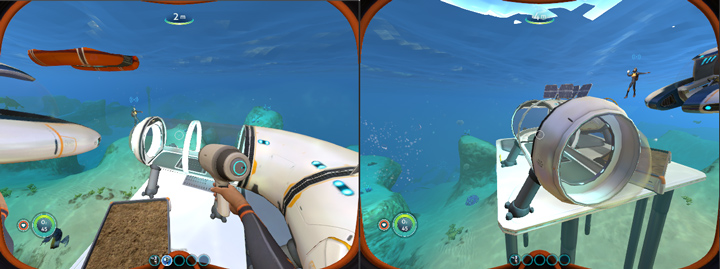
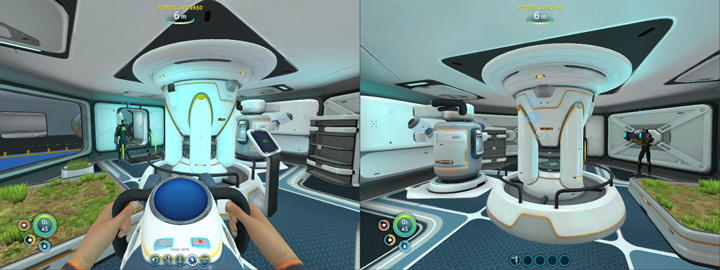
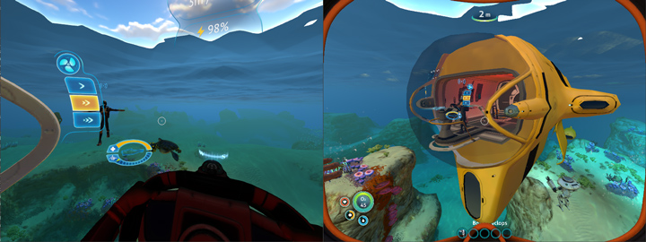
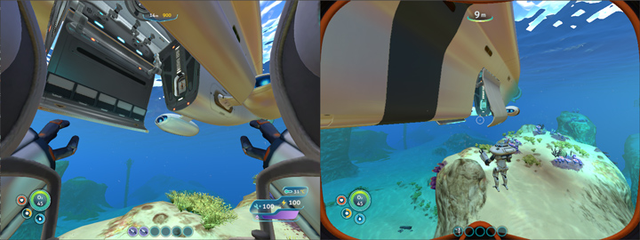

Shinkai: A Subnautica Multiplayer Mod

Shinkai (深海) is a multiplayer mod for the game Subnautica. It is open source and available on GitHub.
The mod was tested on the March update of the game (Update 84), but it seems to work with the April build too. I have personally verified that the game was playable from beginning to completion with 3 friends online, but there isn’t any forced limit. As far as a feature list goes, most of the single player experience carries over to multiplayer the way you would expect it to.
Notes on development of the mod and its challenges follow below.
Mod History: Nitrox
Before developing Shinkai, I looked into existing efforts to make the game multiplayer. The only organized attempt I could find was Nitrox. However, it no longer seems to be in active development and was missing many core features that I felt were required for a fun co-op experience:
- No support for loading or saving progress
- Base building was non functional, no piece/room rotation support
- Base building was only synced for players that were currently connected to the server
- Most bases pieces (reactors, growbeds, etc) were non functional
- Can’t see equipment on other players
- Player and vehicle positions desynchronize, no Cyclops submarine support
- Poor latency in real networking conditions
I have addressed all of these issues with the development of Shinkai.
Diving In
Subnautica is a game developed in Unity, so it’s trivial
to reverse engineer. You can use tools like ILSpy
to dump the full source code for the game contained in its Assembly-CSharp-* files.
To get the game loading the mod, I use DNSpy to
patch the C# IL on a function that gets called at game startup. This patch calls into
the Shinkai assembly and its initialization functions.
Although you can write entire mods by modifying the original assemblies directly with DNSpy, it’s not really manageable when you have to apply a lot of patches. Most Unity game modders make use of Harmony – a library for modifying the C# IL dynamically at runtime. It’s what I use for Shinkai and its ~50 patches.
Networking
I use UDP for any real-time game networking. Unreliable packets are a great bandwidth and performance optimization for anything sent on an interval (like physics). Everything else – connection negotiation, gameplay actions, entity spawning, state changes and chat – require an additional TCP-like reliability layer on top of UDP to ensure their packets are delivered and in-order.
I tried out LiteNetLib for the reliability layer for Shinkai since I didn’t want to spend the time developing something custom for a C# project. It picked it mostly because its API, but it also seemed to perform well on benchmarks for performance. This is something I would probably reevaluate if I went back to the project, however. It took modification of the default MTU rates and queue sizes to get something that work reliably under real world conditions, and I’m still not content with how clients can’t “reconnect” without recreating the socket and changing their local connection port.
Saving and Loading
Subnautica save files serialize game entities (bases, vehicles, the player) and the map (voxel data, loot spawns). Game entities are fast to synchronize, since that data is only a few kilobytes in size. The map data weighs in at multiple megabytes, and because the generator state isn’t deterministic it means that future spawns won’t be synchronized. I opted to have the server be in control of a custom save format.
I first modded the loot and entity spawners in the game to be deterministic based on a server seed, to save having to synchronize megabytes when a client connects. Since players can encounter chunks in any order, I mix the server seed with the position data for the spawn location on the map. The loot remains fairly random, and players can share locations of loot and research unlocks with each other since the map is the same. However, I don’t synchronize gathering of the resources between clients. The world’s resources are finite and fairly scarce – with many players you’d quickly run out of loot.
For game entities like bases and vehicles, I store their relevant information on the server and “replay” the messages back to clients that are joining. This works well in practice and saved a lot of development time, but it’s a fairly inefficient method of handling the problem. If I were to refactor the project, I would work on trying to share/update something similar to the game’s “root” object tree for this kind of data.
I treat most game progression (unlocked research, data logs, equipment) as individual progression. Player data is synchronized and saved on the server as you would expect.
Base Building

This was the hardest to get working right between the clients. In hindsight, all of the problems associated with synchronizing base building could have been solved by doing a full serialize/sync with the associated base after any construction event, even if this is inefficient bandwidth-wise.
The way the building currently works is loosely based on existing work by the Nitrox team – when a player builds or modifies a base piece, it is simulated across all clients.
The first problem was handling piece rotation. To have the pieces rotated the same across on each client, each rotatable piece needed a unique patch to Subnautica’s code. If the game adds any new types of pieces in the future, more work be required to support them.
The second problem was dealing with synchronization. When deconstructing a base piece, a new object is typically spawned in its place. Knowing which object is replaced is tricky, and the server doesn’t have knowledge of the base structure itself – which means any modification must be stored on the server, even if the base piece gets removed later.
Since any number of events can be received in a single frame, problems arise with base pieces getting blocked by pieces that would be considered gone on the next frame after Unity has processed the destruction event. This typically only happened with window / reinforcement pieces, and required patches to resolve the bug.
With these problems fixed, implementing missing functionality for synchronized base pieces is fairly trivial. Most of the functional base pieces are glorified item containers and simply requiring maintaining a shared GUID across all clients that was generated during placement.
Vehicles

All vehicles have synchronized upgrades, inventories and health. The Prawn Suit was one of the vehicles I had the most fun with in the main game, so I put extra work into making sure all of its animations and events work the same as in single player. Attacking with the arms, grappling, drilling and the walking animations are all fully functional and synced between clients.

The Cyclops submarine is a fairly complex and large mobile base in Subnautica. I’ve implemented most of the “fun” functionality for it – lights, horns, engine state, docking, building all worked mostly as you’d expect. Synchronized leaks and fires are something that I would have liked to add, but never got around to.
Physics Synchronization
In Nitrox, most objects continuously interpolated towards their real position but would never attain the actual value. Vehicles were also mishandled by relying on PhysX to be deterministic (it’s not) with velocity simulation – in my tests, vehicle position would drift by many meters over time.
In Shinkai, players and controlled vehicles are interpolated towards their last received position from the server at a dynamic rate. The rate is determined by the calculated packet update frequency and latency. To keep things smooth if packets are dropped or late, limited extrapolation is allowed when the interpolation deadline expires.
Players can push around items and unmanned vehicles in Subnautica, so I wanted to synchronize those too. Since these are typically slow moving, I rely on the client’s physics simulation to keep them in roughly the same place. Whenever they stray too far away from their last updated position, the player notifies the server of the new location. While saving bandwidth with nice, this also lets any client interact and push these objects - everyone is considered the host when it comes to shared physics experiences like this.
Release and Future Support
Having played through the game multiple times alone and with friends, I think it’s time to say goodbye to the world of Subnautica. The public release of Shinkai is not a fully engineered product, but a collection of ideas and concepts I tried when creating a playable experience for a close group of friends over a few weeks of programming in my free time.
I’m open to community contributions to the project, but I think they would be better forward towards the development of Nitrox – the project that sparked my interest in developing Shinkai.